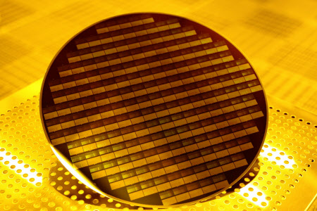
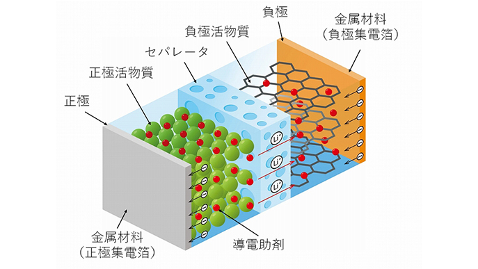
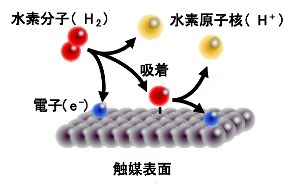
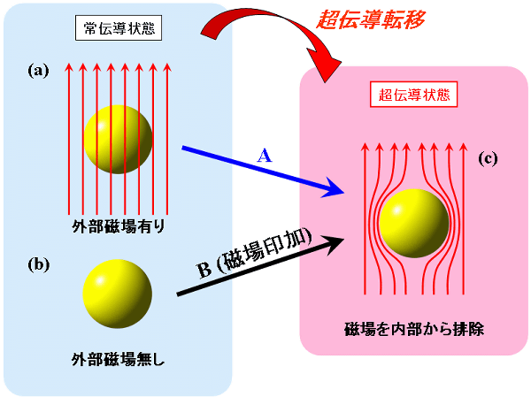

マテリアルズプロジェクトのデータとCGCNNを用いた先進材料分析の統合
急速に進化する材料科学の分野において、新材料の発見と最適化の従来の方法は、多くの場合、時間とコストがかかる広範な実験を伴います。しかし、機械学習とデータサイエンスの進歩により、より効率的で革新的なアプローチが可能になっています。私の卒業研究の一環として、これらの進歩を活用し、Crystal Graph Convolutional Neural Networks (CGCNN) を用いた材料の発見と最適化の革新に取り組んでいます。
CGCNNとは何か？
CGCNN（Crystal Graph Convolutional Neural Networks）は、結晶材料の特性を予測するために設計された最先端の機械学習モデルです。従来のニューラルネットワークとは異なり、CGCNNは結晶格子の複雑なグラフ構造を直接処理できるため、材料科学の応用に非常に適しています。このモデルにより、形成エネルギー、バンドギャップ、弾性など、さまざまな材料特性を高精度で予測することができます。

Materials Projectの役割
Materials Projectは、既知の材料に関する豊富な情報を提供するオープンアクセスデータベースです。その特性や潜在的な応用に関するデータが豊富に含まれており、私の研究の基盤となっています。Materials Projectの豊富なデータセットを利用することで、CGCNNモデルをトレーニングし、新しい材料や既存の材料の特性を正確に予測できるようにします。

研究方法
データ取得と前処理
Pythonプログラムを使用してMaterials Projectからデータをダウンロードし、CGCNNモデルに適した形式に変換します。前処理ステップは、データをクリーンにし、正規化し、機械学習アルゴリズムに適切に構造化するために重要です。
モデルのトレーニングと検証
前処理されたデータを使用して、結晶構造とそれに対応する特性との関係を理解するためにCGCNNモデルをトレーニングします。モデルは、その予測精度と信頼性を確認するために厳格な検証を受けます。
材料の予測と最適化
モデルがトレーニングされた後、新しい仮想材料の特性を予測するために使用します。これにより、実験的に合成されていない材料の探索が可能になります。さらに、既存の材料を最適化するために、特性を向上させる修正を予測することもできます。
詳細な例と応用
半導体材料
半導体は現代の電子機器にとって基本的な材料です。CGCNNを使用して、新しい半導体材料のバンドギャップを予測することができ、さまざまな電子機器への適合性を判断するのに役立ちます。たとえば、新しい材料が太陽光発電に最適なバンドギャップを持つと予測された場合、より効率的な太陽電池の開発につながる可能性があります。 
バッテリー材料
電気自動車や携帯電子機器の用途で高性能なバッテリー材料の需要は増え続けています。CGCNNを使用して、新材料のイオン伝導性と安定性を予測し、高性能バッテリーの候補を特定できます。これにより、エネルギー密度が高く、寿命が長いバッテリーの開発が加速します。 
化学反応用触媒
触媒は、多くの産業プロセス、特に燃料や化学物質の生産において重要です。CGCNNは、材料の触媒活性を予測するのに役立ち、より効率的で持続可能な化学プロセスの有望な候補を特定することができます。たとえば、新しい触媒が発見されれば、水素生産のエネルギー効率が大幅に向上し、クリーンエネルギー源としての実現性が高まります。 
超伝導体
超伝導体はゼロ電気抵抗という独特の特性を持ち、電力伝送や磁気浮上に大きな影響を与えます。CGCNNを用いて、材料が超伝導になる臨界温度を予測することで、より高い温度で動作する新しい超伝導体を発見し、その応用範囲を広げることができます。 
私の研究の影響
この研究の影響は非常に大きいです。CGCNNと機械学習を活用することで、新材料の発見と既存材料の最適化を大幅に加速することができます。このアプローチは、時間と資源を節約するだけでなく、従来の方法では特定できなかった独自で望ましい特性を持つ材料を発見する可能性をもたらします。
さらに、広範な実験を必要とせずに材料特性を予測できる能力は、特に再生可能エネルギー、エレクトロニクス、製薬などの分野で非常に有益です。これらの分野では、先進材料への需要が常に増加しています。
未来の展望と目標
私の研究は進行中ですが、いくつかの目標と将来の方向性を持っています：
- 他の材料データベースから多様で広範なデータセットを取り入れ、モデルの精度と汎用性を向上させる。
- CGCNNモデルに追加の特徴を取り入れ、そのアーキテクチャを改良して、より複雑な材料特性をよりよく捉える。
- 実験研究者と密接に協力し、CGCNNの予測を検証し、新材料の合成とテストに向けた実験努力を導く。
- 私の研究成果とツールをオープンソースコミュニティに提供し、材料科学分野でのさらなる研究と協力を促進する。
結論
私の卒業研究であるCGCNNは、材料科学分野における重要な一歩前進を表しています。機械学習の力をMaterials Projectの豊富なデータと組み合わせることで、材料の発見と最適化がより迅速かつ効率的で革新的になる未来を目指しています。この研究は、材料の理解を深めるだけでなく、新しい技術革新と応用の道を切り開くものです。
このアプローチを開発し改良し続ける中で、今後の発見と革新に期待しています。このプロジェクトを通じて、広範な科学コミュニティに貢献し、材料科学の分野でのさらなる研究と開発を促進したいと考えています。